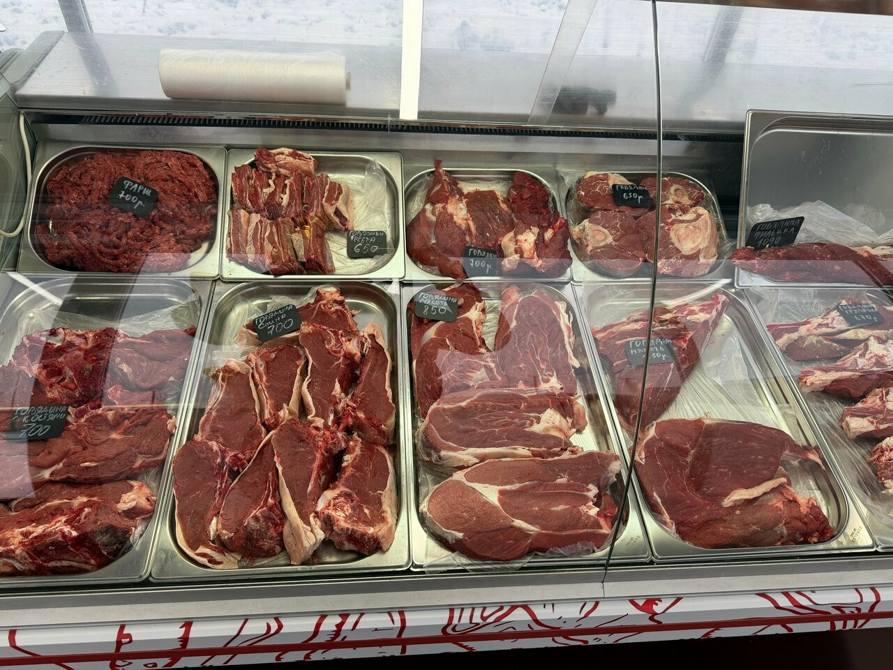
Говядина и баранина
Парная говядина, вырезка, рёбра, каре и мякоть баранины. Подскажем, какой кусок взять для стейка или запекания.
«Чистый вкус натуральных продуктов»
Говядина, баранина, фермерская курица, колбасы халяль, полуфабрикаты и молочные продукты. Две лавки в Шушарах. На Муромской, 2А открыто каждый день с 9:00 до 21:00.
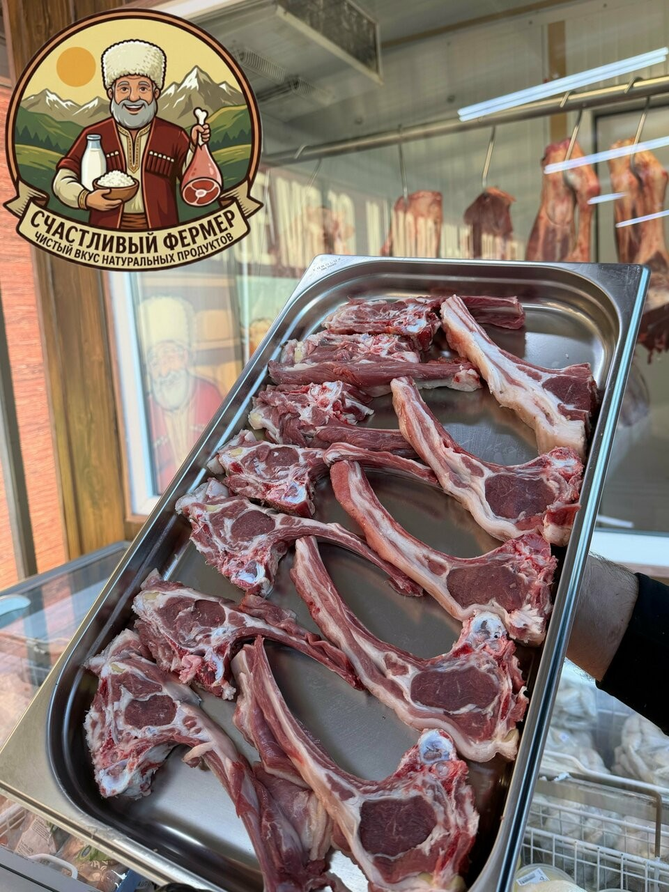
«Свежее качественное мясо, халяль и тот самый подход, который когда-то передавался от дедушки к внуку.»

Парная говядина, вырезка, рёбра, каре и мякоть баранины. Подскажем, какой кусок взять для стейка или запекания.
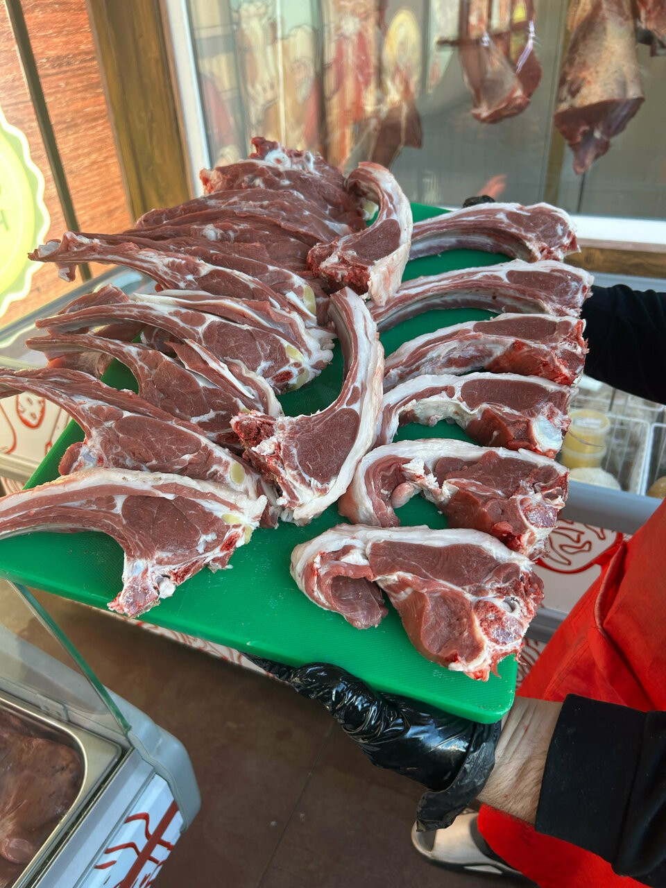
Мякоть, пистолетики, каре. Подберём нужную часть и замаринуем по вашему заказу.
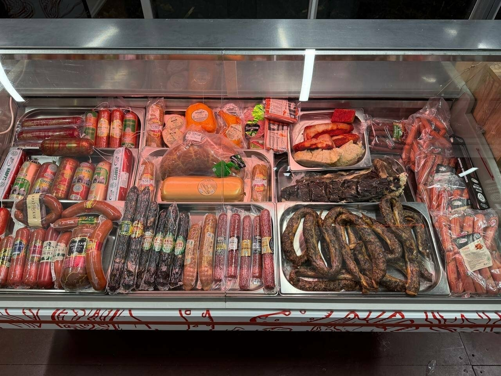
Большая витрина колбас и мясных деликатесов. Для завтрака, ужина или перекуса.
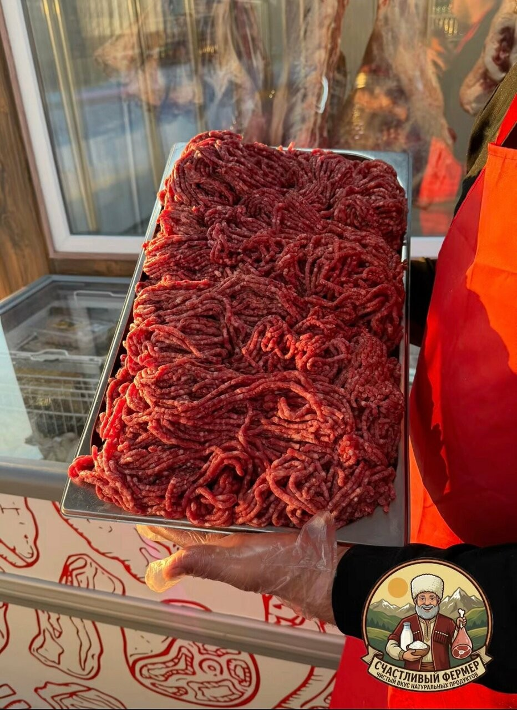
Свежий фарш для котлет и субпродукты.
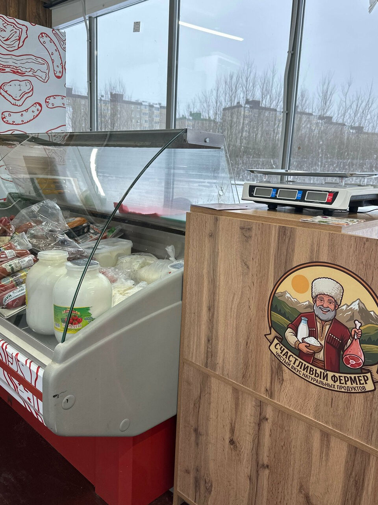
Катык, айран, сулугуни, адыгейский сыр и другая молочная продукция.
Фермерская курица, домашние полуфабрикаты, урбеч из Дагестана, приправы и лимонады.
Продавцы подскажут кусок под ваше блюдо и расскажут, как его приготовить.
Выберите мясо, а маринад для шашлыка или стейков мы сделаем сами. Остаётся только пожарить.
Мясо можно заказать с доставкой на дом. Позвоните, и мы поможем оформить заказ.
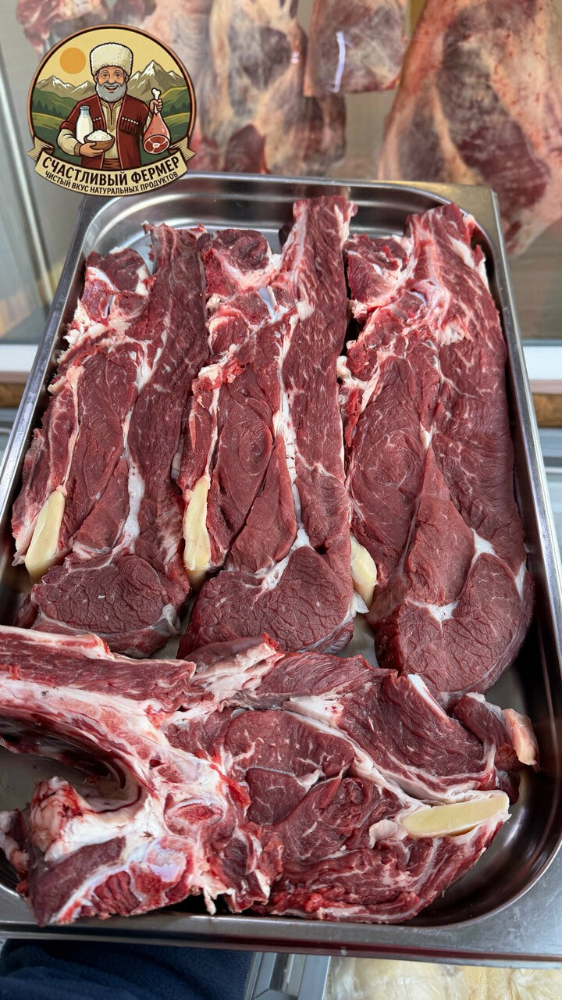
Всё самое лучшее в простом. Возьмите у нас мясо и замаринуйте дома, или попросите нас, и мы всё подготовим.
Чисто, светло и без неприятных запахов: так о лавке пишут покупатели.
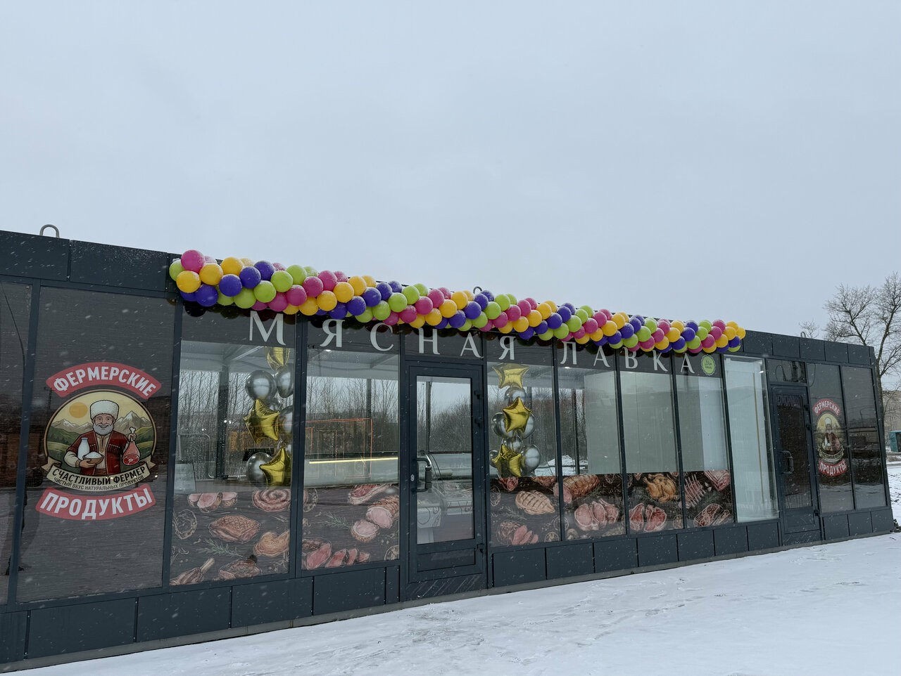
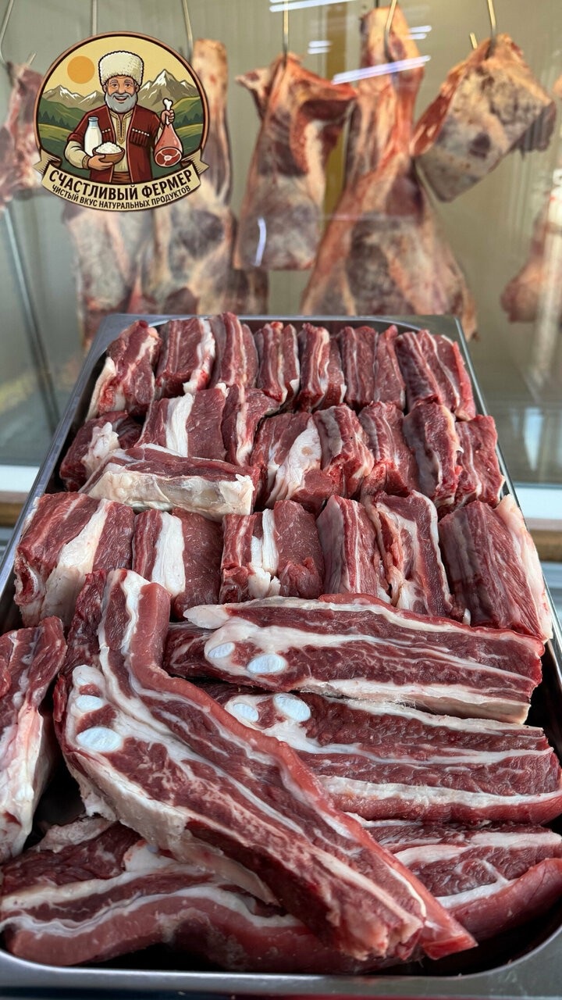
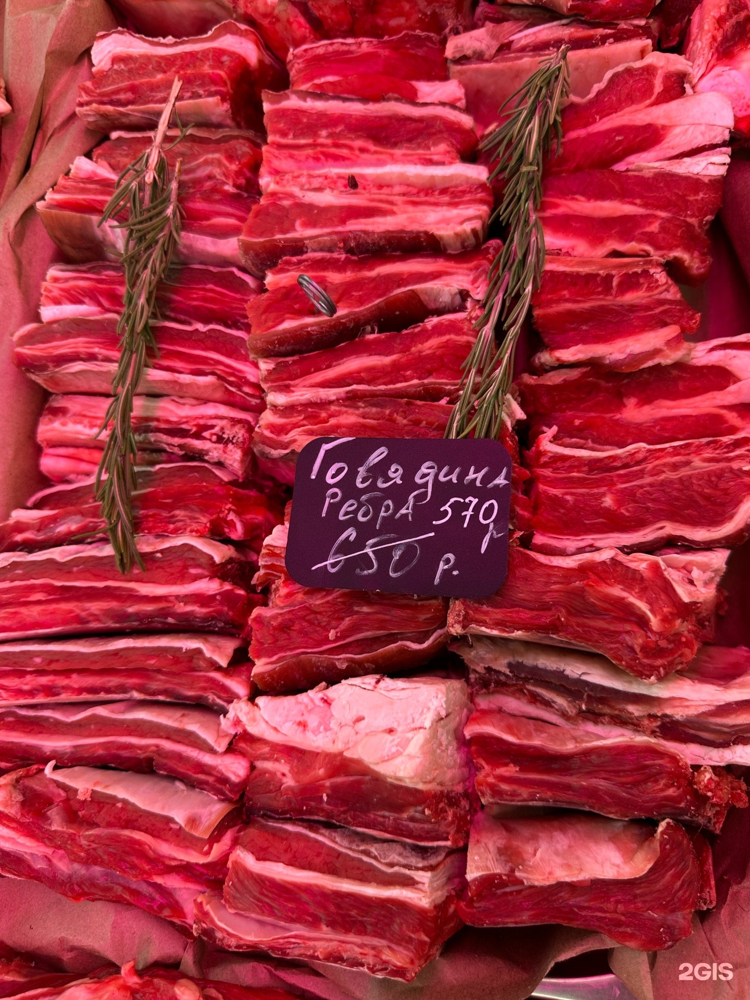
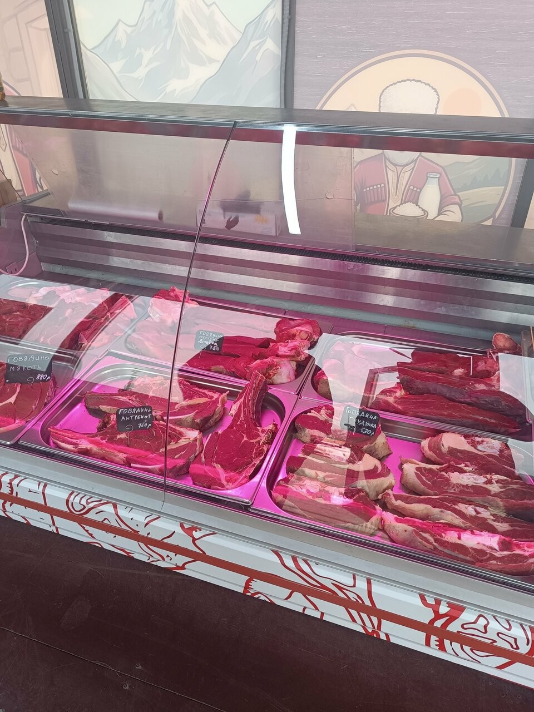
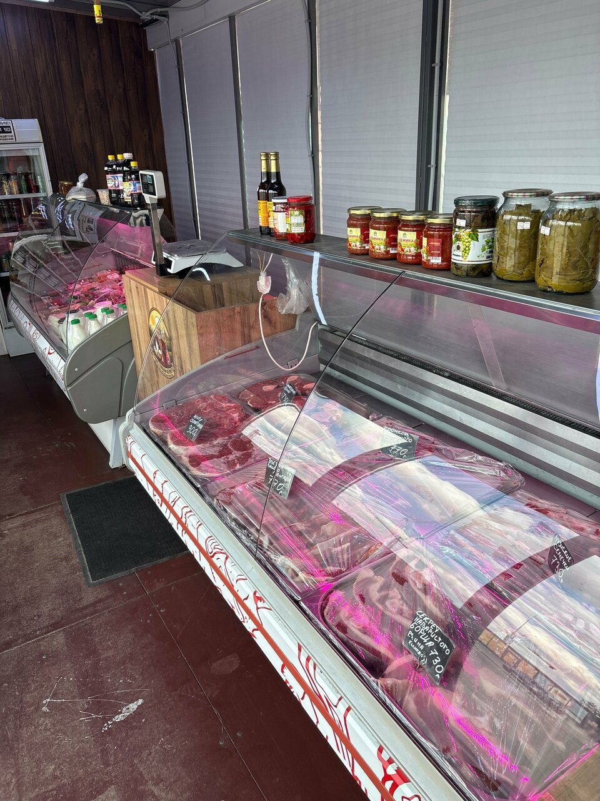
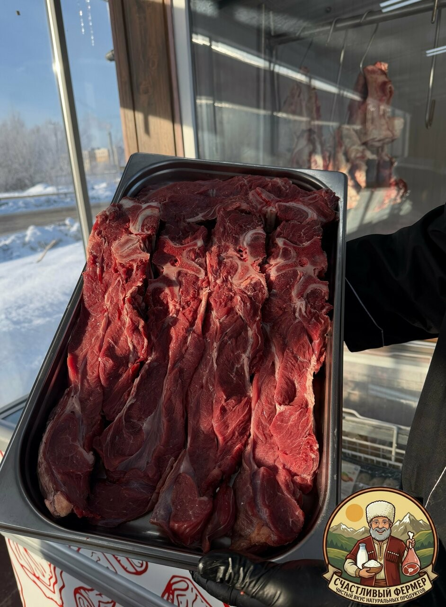
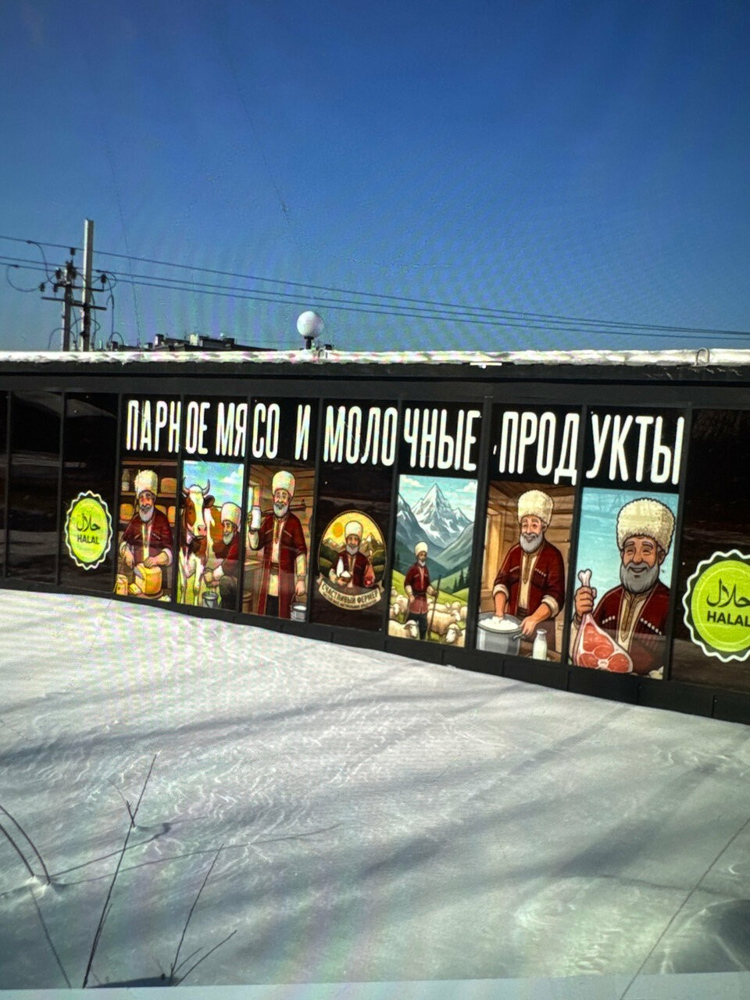
★★★★★Всё, что там покупала, отличного качества, мясо всегда свежее. Самый вкусный сыр, который пробовала, именно в этом магазине. Пельмешки, курица, говядина, баранина, колбасы, всё на высшем уровне. Большой выбор приправ. В магазине чисто и стильно, очень удобная парковка рядом.
★★★★★Очень удивили и порадовали сервисом! Заказала мясо, и его привёз сам владелец магазина. Мясо было упаковано очень аккуратно и, что главное, оказалось очень вкусным.
★★★★★Видно, что всё сделано с душой: халяльное мясо, свежая молочная продукция, специи. Взяла молочную продукцию: вкус действительно домашний, натуральный.
★★★★★Мясо лучшего качества. Всегда свежее. Ассортимент мяса на любой вкус, шашлыки, пистолетики, фарш, всё на высшем уровне. Теперь покупаем только тут.
★★★★★Продавец очень вежливый, проконсультировал и помог в выборе. В магазине на удивление чисто и нет неприятных запахов, такое редко встретишь в мясном отделе.
★★★★★Мясо вкусное, на вид очень красивые кусочки (такое же вкусное, как в Дагестане), приятные цены, вежливый персонал, быстрая доставка.
Муромская, 2А: ежедневно с 9:00 до 21:00, рядом парковка.
пос. Шушары, тер. Детскосельский, Муромская ул., 2А
Ежедневно 9:00–21:00
пос. Шушары, тер. Пулковское, Образцовая ул., 2
Новая лавка. Часы работы уточняйте по телефону
Картой, переводом или наличными